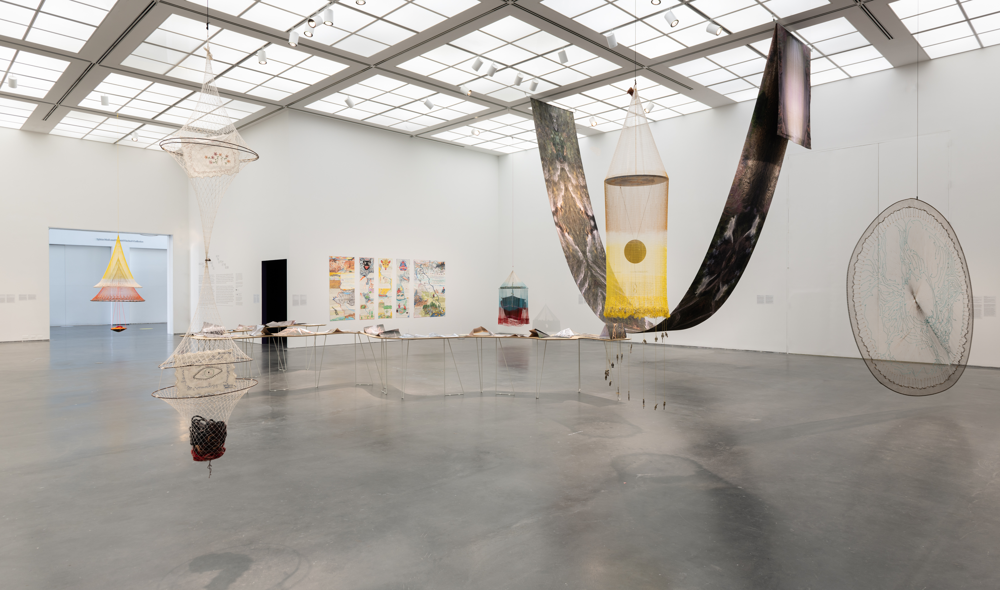

~~~~~~~~~~~~~~~~~~~~~~~~~~~~~~~~~~~~~~~~~~~~~~~~~~~~~~~~~~~~~~~~~~~~~~~~~~~~~~~~~~~~~~~~~~~~~~~~~~~~~~~~~~~~~~~~~~~~~~~~~~~~~~~~~~~~~~~~~~~~~~~~~~~~~~~~~~~~~~~~~~~~~~~~~~~~~~~~~~~~
From The Bottom of the River
~~~~~~~~~~~~~~~~~~~~~~~~~~~~~~~~~~~~~~~~~~~~~~~~~~~~~~~~~~~~~~~~~~~~~~~~~~~~~~~~~~~~~~~~~~~~~~~~~~~~~~~~~~~~~~~~~~~~~~~~~~~~~~~~~~~~~~~~~~~~~~~~~~~~~~~~~~~~~~~~~~~~~~~~~~~~~~~~~~~~
~~~~~~~~~~~~~~~~~~~~~~~~~~~~~~~~~~~~~~~~~~~~~~~~~~~~~~~~~~~~~~~~~~~~~~~~~~~~~~~~~~~~~~~~~~~~~~~~~~~~~~~~~~~~~~~~~~~~~~~~~~~~~~~~~~~~~~~~~~~~~~~~~~~~~~~~~~~~~~~~~~~~~~~~~~~~~~~~~~~~
~~~~~~~~~~~~~~~~~~~~~~~~~~~~~~~~~~~~~~~~~~~~~~~~~~~~~~~~~~~~~~~~~~~~~~~~~~~~~~~~~~~~~~~~~~~~~~~~~~~~~~~~~~~~~~~~~~~~~~~~~~~~~~~~~~~~~~~~~~~~~~~~~~~~~~~~~~~~~~~~~~~~~~~~~~~~~~~~~~~~

Installation view, Carolina Caycedo: From the Bottom of the River, MCA Chicago
Dec 12, 2020–Sep 12, 2021
Photo: Nathan Keay, © MCA Chicago
~~~~~~~~~~~~~~~~~~~~~~~~~~~~~~~~~~~~~~~~~~~~~~~~~~~~~~~~~~~~~~~~~~~~~~~~~~~~~~~~~~~~~~~~~~~~~~~~~~~~~~~~~~~~~~~~~~~~~~~~~~~~~~~~~~~~~~~~~~~~~~~~~~~~~~~~~~~~~~~~~~~~~~~~~~~~~~~~~~~~
Carolina Caycedo is a London-born Colombian artist living in Los Angeles. She participates in movements of territorial resistance, solidarity economies, and housing as a human right. Carolina’s artistic practice has a collective dimension to it in which performances, drawings, photographs and videos are not just an end result, but rather part of the artist’s process of research and acting. Her work contributes to the construction of environmental historical memory as a fundamental element for non-repetition of violence against human and non-human entities, and generates a debate about the future in relation to common goods, environmental justice, just energy transition and cultural biodiversity.
She has held residencies at The Huntington Gardens, Libraries and Art Collections in San Marino, California DAAD artists-in-Berlin program , amongst others. Caycedo has received funding from Creative Capital, California Community Foundation, Los Angeles Department of Cultural Affairs, Harpo Foundation, Art Matters, Colombian Culture Ministry, Arts Council UK, and Prince Claus Fund. Recent solo museum shows include Care Report at Muzeum Sztuki in Łódź; Wanaawna, Rio Hondo and Other Spirits in Orange County Museum of Art, and Cosmotarrayas at ICA Boston and From the bottom of the River at MCA Chicago. In 2019 her work was part of the 45 Salón Nacional de Artistas Colombia, Chicago Architecture Biennial, Film sector of Art Basel in Basel, and the 2020 Wanlass Artist in Residence at Occidental College in Los Angeles. Caycedo is the 2020-2022 Inaugural Borderlands Fellow at the Center for Imagination in the Borderlands-Arizona State University and the Vera List Center for Art and Politics. She is a member of the Los Angeles Tenants Union and the Rios Vivos Colombia Social Movement.